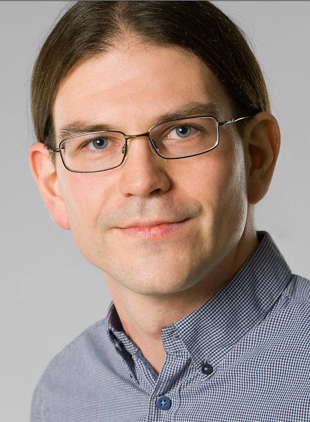
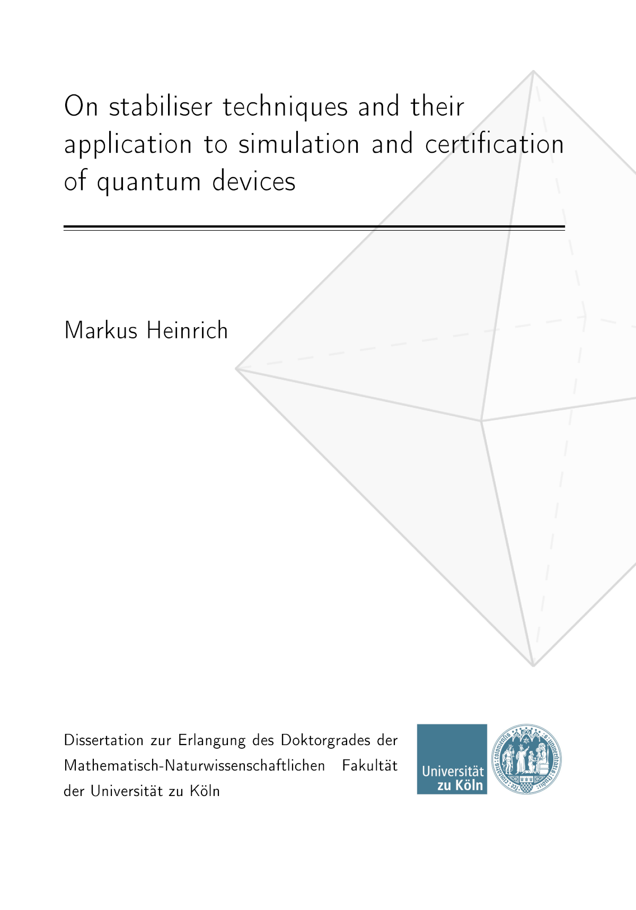

Markus Heinrich
I am a postdoctoral researcher in the group of Martin Kliesch at the Heinrich Heine University Düsseldorf.Contact
- Dr. Markus Heinrich
- Institute for Theoretical Physics
- Heinrich Heine University Düsseldorf
- Universitätsstraße 1
- 40225 Düsseldorf
- Building: 25.32
- Room: 03.31
- Mail: markus(dot)heinrich(at)hhu(dot)de
Research Interests
I am a theoretical quantum computer scientist with research interests in various subfields of quantum computing. This encompasses classical simulation methods, stabiliser formalism and magic state model, characterisation and benchmarking protocols, and compilation of quantum circuits.
I am interested in the theory and construction of (approximate) unitary $t$-designs and random quantum circuits. Among others, exact unitary designs play an important role in many benchmarking and characterisation protocols. From a practical point of view, exact unitary designs however have several disadvantages and hence the focus has shifted towards approximating them with random circuits. Here, a thorough analysis of their convergence properties is key to guarantee the proper functioning of the protocol and, for instance, plays an important role in quantum supremacy experiments. I am currently working on adapting characterisation and benchmarking protocols to random circuits, thereby combining rigorous performance guarantees with minimal practical assumptions, making them more easily accessible to experimentalists.
Currently, I am working in a BMBF project on ion trap quantum computers which involves close collaboration with experimental and industrial partners. Through this, I have become increasingly interested in the practical challenges of building quantum computers. Moreover, I have started to work on gate set design and helped developing compilation methods using multi-qubit gates native to ion trap architectures.
During my PhD, I have started working on advanced methods based on the stabiliser formalism and the Clifford group. In particular, I have become interested in stabiliser-based simulation methods such as Wigner functions on discrete phase space and decompositions in stabiliser frames (e.g. robustness of magic, stabiliser extent, dyadic negativity). I have worked on the closely related resource theory of magic and am interested in resource-theoretic questions in quantum computing.
Publications
- Mirko Arienzo, Markus Heinrich, Ingo Roth, and Martin Kliesch: Closed-form analytic expressions for shadow estimation with brickwork circuits, arXiv:2211.09835 (2022)
- Pascal Baßler, Matthias Zipper, Christopher Cedzich, Markus Heinrich, Patrick Huber, Michael Johanning, and Martin Kliesch: Synthesis of and compilation with time-optimal multi-qubit gates, arXiv:2206.06387 (2022)
- Arne Heimendahl, Markus Heinrich, and David Gross: The axiomatic and the operational approaches to resource theories of magic do not coincide, Journal of Mathematical Physics 63.11 (2022).
- Jonas Haferkamp, Felipe Montealegre-Mora, Markus Heinrich, Jens Eisert, David Gross, and Ingo Roth: Efficient Unitary Designs with a System-Size Independent Number of Non-Clifford Gates, Communications in Mathematical Physics (2022).
- Markus Heinrich and David Gross: Robustness of Magic and Symmetries of the Stabiliser Polytope, Quantum 3 (2019)
For a up-to-date list, see my papers on arXiv and my Google Scholar profile.
PhD thesis
On stabiliser techniques and their application to simulation and certification of quantum devices
University of Cologne, 2021
Download @ university library of Cologne
Talks available online
Short CV
| 2021 - present | Postdoc in the group of Martin Kliesch @ Heinrich Heine University Düsseldorf |
| 2017 - 2021 |
Institute for theoretical physics, University of Cologne PhD in theoretical physics (May 2021) Thesis: On stabiliser techniques and their application to simulation and certification of quantum devices Supervised by David Gross |
| 2014 - 2016 |
University of Jena Master's degree in physics "Interfaces in Holographic Weyl Semimetals" |
| 2009 - 2014 |
University of Freiburg Bachelor's degree in mathematics Bachelor's degree in physics |